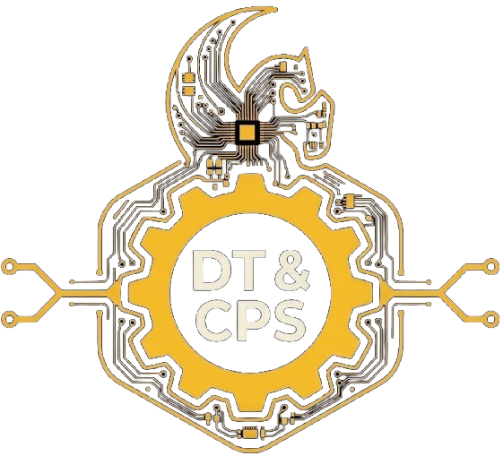

Bridging the Physical and Digital Worlds
Department of Industrial Engineering and Management Systems · University of Central Florida
Research in
The Digital Transformation & Cyber-Physical Systems (DT&CPS) Lab is a research hub dedicated to advancing the science and engineering of digital transformation across domains where cyber-physical integration creates transformative opportunities. Rooted in industrial engineering, our work encompasses any system where bridging the physical and digital worlds unlocks new capabilities. Our core competencies span Digital Twins, Modeling & Simulation, Internet of Things, Extended Reality, and Artificial Intelligence — applied wherever they can make the greatest impact.
We apply Digital Twin and cyber-physical systems principles across manufacturing, distributed systems, agriculture, and beyond — wherever bridging physical and digital worlds creates value.
Deep technical depth in IoT, edge computing, real-time simulation, extended reality, and AI — enabling end-to-end cyber-physical integration from sensor to insight.
Through the Knights Digital Twin Initiative, we partner with industry to co-develop, validate, and deploy research in real operational environments — ensuring impact beyond the lab.
Our methods combine rigorous data science and AI with a focus on human factors — designing intelligent systems that augment human decision-making rather than replace it.
Explore our projects and publications, or reach out to discuss collaboration opportunities with the DT&CPS Lab.